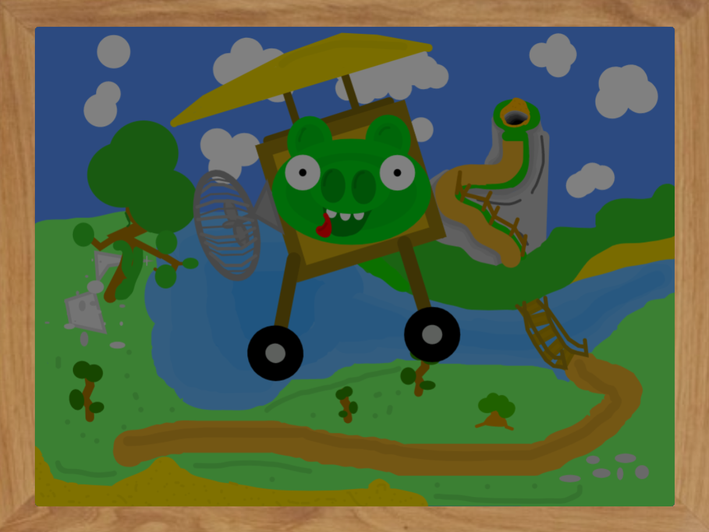

Doos project
Ik had met Karsten, Vincent en Dries een project gemaakt. Je moest een smarthome maken. Dat is een huis met allemaal splinternieuwe, geavanceerde apparaten en meubels die oudere in duurzaamheid, effectiefheid en eenvoud kunnen verbeteren.
Met microbit moest je dit maken. Je kan er van alles mee doen, het is erg programeerbaar en is eigenlijk gewoon een mini computer. Verder maak je in blender alle assets, die je dan 3D uitprint.
 Ik had ook nog een schilderij gemaakt, om de sfeer op te vrolijken. Het is van Bad Piggies, een game die je hopelijk herkent. Het ziet er leuk uit, niet?